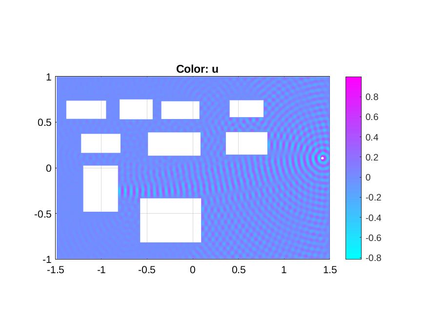

Signal propagation in a city is characterized essentially by obstacles which reflects the signal. In a city signal power levels follows approximately Rayleigh
statistics if there is no line-of-sight path present between the transmitter and the receiver.
Here is just couple of nice figures I made to help myself to perceive what is going on. First figure demonstrates how a single signal propagates between buildings, and second figure shows how aggregate signal power (interference) from many transmitters develops in time.
Figure:
Helmholtz equation
solved by finite element method. The white boxes represents buildings, and the little white circle is the transmitter. You can see how waves multi path components acts either constructively or detrimentally because of reflections from the buildings.
|  |
Figure:
Interference field developing in time. Transmitters in random locations are moving to random directions in time, and the aggregate signal strength is plotted. There is a line-of-sight component is present – that is we assume in fact Rician fading. Red occurrences will cause remarkable disturbance in communication as interference from other transmitters gets large.
 |
References:
1
François Baccelli, Bartlomiej Blaszczyszyn Stochastic Geometry and Wireless Networks, Volume I -Theory